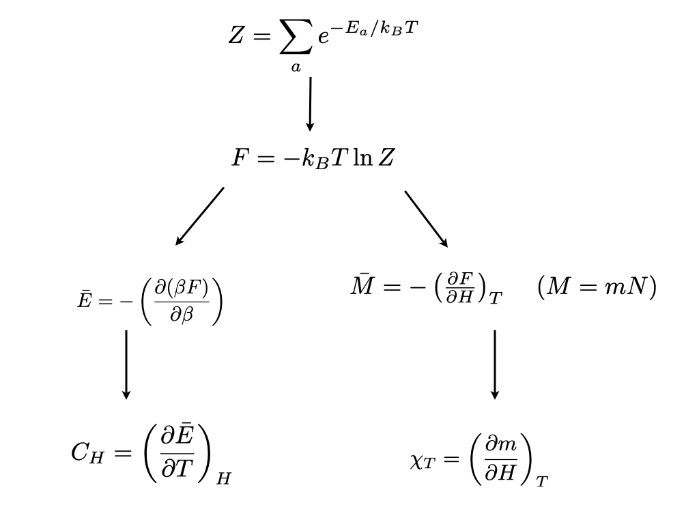

3 Background concepts
In seeking to describe near-critical phenomena, it is useful to have a quantitative measure of the difference between the phases coalescing at the critical point: this is the role of the order parameter, \(Q\). In the case of the fluid, the order parameter is taken as the difference between the densities of the liquid and vapour phases. In the ferromagnet it is taken as the magnetisation. As its name suggest, the order parameter serves as a measure of the kind of orderliness that sets in when the temperature is cooled below a critical temperature.
Our first task is to give some feeling for the principles which underlie the ordering process. The probability \(p_a\) that a physical system at temperature \(T\) will have a particular microscopic arrangement (configuration), labelled \(a\), of energy \(E_a\) is
\[ p_a=\frac{1}{Z}e^{-E_a/k_BT} \tag{3.1}\]
The prefactor \(Z^{-1}\) is the partition function: since the system must always have some specific arrangement, the sum of the probabilities \(p_a\) must be unity, implying that
\[ Z=\sum_ae^{-E_a/k_BT} \tag{3.2}\] where the sum extends over all possible microscopic arrangements.
These equations assume that physical system evolves rapidly (on the timescale of typical observations) amongst all its allowed arrangements, sampling them with the probabilities Equation 3.1 the expectation value of any physical observable \(O\) will thus be given by averaging \(O\) over all the arrangements \(a\), weighting each contribution by the appropriate probability:
\[\bar {O}=\frac{1}{Z}\sum_a O_a e^{-E_a/k_BT} \tag{3.3}\]
Sums like Equation 3.3 are not easily evaluated. Nevertheless, some important insights follow painlessly. Consider the case where the observable of interest is the order parameter, or more specifically the magnetisation of a ferromagnet.
\[ Q=\frac{1}{Z}\sum_a Q_a e^{-E_a/k_BT} \tag{3.4}\]
It is clear from Equation 3.1 that at very low temperature the system will be overwhelmingly likely to be found in its minimum energy arrangements (ground states). For the ferromagnet, these are the fully ordered spin arrangements having magnetisation \(+1\), or \(-1\).
Now consider the high temperature limit. The enhanced weight that the fully ordered arrangement carries in the sum of Equation 3.4 by virtue of its low energy, is now no longer sufficient to offset the fact that arrangements in which \(Q_a\) has some intermediate value, though each carry a smaller weight, are vastly greater in number. A little thought shows that the arrangements which have essentially zero magnetisation (equal populations of up and down spins) are by far the most numerous. At high temperature, these disordered arrangements dominate the sum in Equation 3.4 and the order parameter is zero.
The competition between energy-of-arrangements weighting (or simply ‘energy’) and the ‘number of arrangements’ weighting (or ‘entropy’) is then the key principle at work here. The distinctive feature of a system with a critical point is that, in the course of this competition, the system is forced to choose amongst a number of macroscopically different sets of microscopic arrangements.
Finally in this section, we note that the probabilistic (statistical mechanics) approach to thermal systems outlined above is completely compatible with classical thermodynamics. Specifically, the bridge between the two disciplines is provided by the following equation
\[ F=-k_BT \ln Z \tag{3.5}\]
where \(F\) is the “Helmholtz free energy”. All thermodynamic observables, for example the order parameter \(Q\), and response functions such as the specific heat or magnetic susceptibility are obtainable as appropriate derivatives of the free energy. For instance, utilizing Equation 3.2, one can readily verify (try it as an exercise!) that the average internal energy is given by
\[\bar{E}=-\frac{\partial \ln Z}{\partial \beta}, \tag{3.6}\]
where \(\beta=(k_BT)^{-1}\).
The relationship between other thermodynamic quantities and derivatives of the free energy are given in fig. 3
